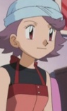
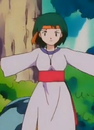

|
Berthier |
- Sailor Moon R
- Sailor Moon R Memorial
|
Berthier is the second-youngest sister of Ayakashi sisters. She is counterapart of Ami Mizuno/Sailor Mercury. She fears Rubues and does not have love for him. Berthier has a very darkly personality, but is shown to have great respect for all of siblings. She is strategist like Ami. |
 |
Chika |
|
Chika is a young girl in the hosptial. She is a big fan of Pretty Cure and attached to Chiffon. |
|  |
Julie |
- Pokemon Advanced Generations
|
Julie is a former Pokemon Coordinator. She lives a ranch near Fiery Path and takes care of multiple Numel. She makes Pokeblocks for her Pokemon using berries on her ranch. |
|  |
Rochelle |
|
Rochelle is a Pokemon Trainer with 4 Donaphan. Her Donaphan help supply local artisans, collectord and jewelers. She cares deeply for her Pokemon and trust her Pokemon. |
 |
Yoshimi Morita |
|
Yoshimi Morita is one of Urara Kasugano's friends. Her family owns a curry shop. |